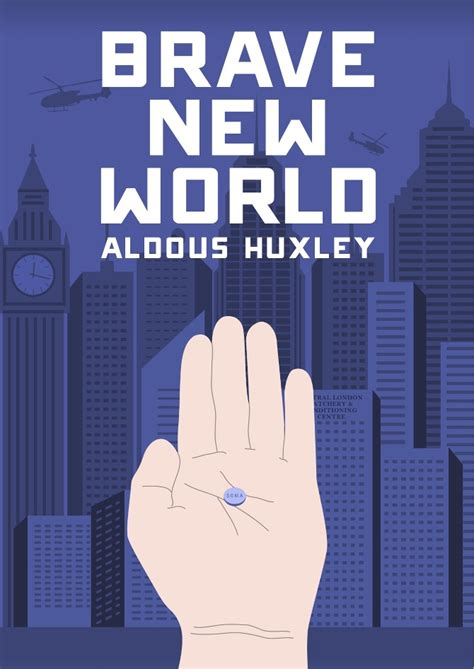
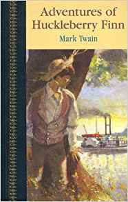

Over the past few years, I have developed a deep interest in programming, so I am now learning to code!
Find out more|  |
Aldous HuxleyThe author of nearly fifty books, he was best known for his novels including Brave New World, set in a dystopian future; for nonfiction works, such as The Doors of Perception, which recalls experiences when taking a psychedelic drug; and a wide-ranging output of essays. |
|  |
Mark TwainSamuel Langhorne Clemens, better known by his pen name Mark Twain, was an American writer, humorist, entrepreneur, publisher, and lecturer. |
George OrwellEric Arthur Blair (25 June 1903 – 21 January 1950), better known by his pen name George Orwell, was an English novelist, essayist, journalist, and critic. |
This page has been coded during the FullStack program @LeWagon. That was probably the best experience of my entire life.